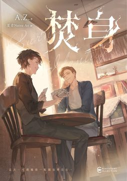

身分一旦查明後，「誰」去決定「一個人是誰」？ ◤內容簡介◢ 高雄前鎮的西甲市場，一大早就拉起了封鎖線。金紙店老闆娘阿香倒在店裡，後腦有被鈍器打傷的痕跡。 街坊都不敢相信。阿香是市場裡出了名的好人，清寒學生每天可以到她店裡領一餐，老市場差點被徵收，也是她出面擋下來。大家拱她出來選里長，眼看開票就要當選，她卻當場宣布退選。這樣的人，怎麼會有人想殺她？ 案子不大，警局沒有成立專案小組，落到轉行當警察才一年多的李博亞手上。他原本是律師事務所的合夥律師，這次又找來以前一起破過案的搭檔胡子齊幫忙。胡子齊平常在飲料店當外送員，滿腦子只有魔術，然而胡子齊一到現場，就覺得非常不對勁。 另一方面，阿香的三個孩子旅居國外二十多年，接到消息還要先喬好工作才肯訂機票，一回到台灣，最關心的是老房子能賣多少錢。李博亞則在財物清單上發現另一件怪事，阿香的現金和存款加起來只剩一萬多元，丈夫十年前過世留下的壽險金早就不知去向…… ◤本書看點◢ ☆ 阿香幫過的人很多，金紙店門口堆滿了寫給她的卡片。可是青草茶堂的丘宜嫻聽哥哥說起一件舊事：當年阿香參選里長，是先幫了丘宜嫻一個忙，丘家的爸爸才把票投給阿香。丘宜嫻氣得衝到金紙店門口，把供品丟了一地。一個人做了這麼多好事，背後有沒有自己的算計，市場裡的人各有說法。 ☆ 《幻象消失之夜》的李博亞和胡子齊再度搭檔，這次來到高雄的傳統市場。李博亞帶著笑臉和伴手禮去跟攤商打交道，攤商偏偏只喜歡會變魔術的胡子齊；胡子齊則愛上青草茶堂的什錦菜湯，三天兩頭跑去吃。兩人一路鬥嘴，李博亞當初為什麼放著律師不當、跑來當警察，他也在這次查案途中慢慢說了出來。 ☆ 李博亞一開始認定這案子跟魔術無關，胡子齊卻習慣用魔術師的眼光看人。他說，人記不清楚的事，只要旁邊有人引導，就會記成別人希望的樣子，所以街坊說的話不能全信。書中不少魔術取自職業魔術師簡子的表演，簡子也為這本書寫了推薦，序末還附了一個讀心小遊戲。 ☆ 故事發生在高雄前鎮的西甲市場，這裡有金紙店、乾貨攤、蔬果攤，還有一家把老中藥行改裝成文青風的青草茶堂，老攤商之間講的都是台語。A.Z. 在參加高雄文學館的地景寫作活動時走進這座市場，當天就構思出這個故事。 ◤名家推薦◢ 職業魔術師、台灣魔術圈協會理事長｜簡子——真正厲害的魔術師鑽的是你的『大腦漏洞』……這部小說裡，也藏著這種『讓你不知不覺掉進局裡』的趣味。 編輯、台灣犯罪作家聯會祕書長｜洪敍銘——「哀悼」的資格不再由官方的身分登記決定，而是回歸地方共同體的權力。